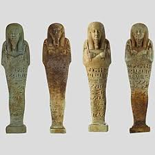
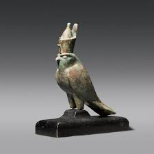
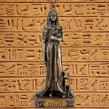

Arta
Natura religioasă a civilizației egiptene a influențat contribuțiile acesteia la arta antichității. Multe din marile lucrări ale egiptenilor antici reprezintă zei, zeițe și faraoni (considerați și ei divinități). Arta Egiptului Antic este caracterizată în general de ideea de ordine. Dovezi ale mumificării și construcției de piramide în afara Egiptului stau mărturie a influenței sistemului de credințe și valori ale egiptenilor asupra altor civilizații, unul din modurile de transmitere fiind Drumul Mătăsii.
Arta egipteană, cu marile sale forme de manifestare (arhitectură, pictură, sculptură etc.) este așezată sub semnul fenomenului religios. Legătura vechilor egipteni cu zeii protectori ai Egiptului este profundă și se manifestă atât pe pământ cât și în viața de dincolo — element central al credinței egiptene străvechi, de aceea operele de artă egiptene au câteva elemente comune. Toate au un anume imobilism: secol după secol s-au reprodus aceleași forme artistice, s-au utilizat aceleași tehnici și aceleași materiale. Statuile faraonilor sau ale marilor demnitari nu reprezintă trupul real ci mai degrabă ele proiectează o imagine ideală a unui om aflat într-o comuniune permanentă cu zeii și deci aflat într.o stare de har divin. De aici rezultă caracterul solemn al statuilor egiptene, senzația de măreție pe care aceasta o produce privitorului. Deși artistul egiptean preferă să reprezinte profiluri umane, atunci când configurează chipul uman el respectă o convenție impusă de credințele sale religioase. Omul răposat trebuie să privească fie spre apus, spre lumea de dincolo — spre împărăția lui Osiris, fie spre răsărit, spre lumea de aici unde răsare zeul-soare Ra. De-a lungul timpului s-au lucrat în Egiptul antic poate zeci de mii de statui de bronz, piatră, lemn, aur— întotdeauna pictate. Artistul egiptean acorda culorilor o semnificație anume, culorile fiind de fapt simboluri religioase. Roșul era o culoare negativă, aceasta fiind culoarea zeului SETH, zeul deșertului lipsit de viață și de acea zeul morții, al răului și totodată al dezordinii. Verdele, culoarea vieții vegetale și de aceea culoarea bucuriei și tinereții era închinată zeului Osiris, zeu al reînvierii și a nemuririi ce stăpânea lumea de dincolo. Tot astfel, culoarea neagră avea aceeași semnificație — negrul fiind culoarea pământului fertil al Nilului – fluviu, care, prin revărsările sale, asigura “reînvierea“ veșnică a Egiptului an după an și garanta puterea și prosperitatea țării. Albastrul era culoarea cerului și a zeului acestuia Amon. Galbenul reprezenta aurul, un material prețios simbol al nemuririi zeilor și de aceea avea un caracter sacru, el fiind destinat numai în reprezentările zeilor și faraonilor. Albul—simbol al purității și bucuriei era culoarea coroanei Egiptului de Jos.
Vechii egipteni au produs obiecte de artă pentru a servi în scopuri funcționale.Artiștii au aderat la forme artistice și iconografice, care au fost dezvoltate în Vechiul Regat, în urma unui set strict de principii care au rezistat influenței străine și schimbării interne. Standardele artistice presupuneau linii simple, forme și zone plate de culoare combinate cu proiecția plană caracteristică figurilor fără indicări spațiale - a creat un sentiment de ordine și echilibru într-o compoziție. Imaginile și textele erau gravate pe morminte și zidurile templului, sicrie, stele și chiar statui. Paleta lui Narmer, de exemplu, afișează figuri care pot fi citite ca hieroglife.Din cauza normelor rigide care au guvernat, aspectul său este extrem de stilizat si simbolic, vechea artă egipteană servind unor scopuri politice și religioase cu precizie și claritate. Artizanii egipteni foloseau piatra pentru a sculpta statui și reliefuri fine, dar foloseau lemnul ca un substitut ieftin și ușor de sculptat. Vopsele erau obținute din minerale precum fier ( roșu și galben ocru ), minereuri de cupru ( albastru și verde ) funingine sau cărbune ( negru ), și calcar ( alb ). Vopselele putea fi amestecate cu gumă arabică ca un liant și presate, care puteau fi umezite cu apă atunci când era nevoie. Faraonii foloseau arta pentru a înregistra victoriile în lupte, decretele regale și scenele religioase. Cetățenii de rând au avut acces la piese de artă funerară, cum ar fi statuile shabti și cărți ale morților, care au crezut că-i protejau în viața de apoi.
În timpul Regatului Mijlociu, modele de lemn sau lut care descriu scene din viața de zi cu zi a devenit populare în morminte Într-o încercare de a dubla activitățile care le trăiesc în viața de apoi, aceste modele arătau muncitori, case, bărci și formațiuni militare, fiind reprezentări ale unei vieți de apoi ideale. Evenimentele se reflectau în schimbarea atitudinilor culturale sau politice. După invazia Hyksoșilor în a doua perioadă intermediară, fresce minoice au fost găsite la Avaris. Cel mai elocvent exemplu ale unei schimbări politice în forme artistice provine din perioada Amarna, unde figurile au fost radical modificate pentru a se conforma ideilor religioase revoluționare ale lui Akhenaton. Acest stil, cunoscut sub numele de arta Amarniană, a fost rapid și complet ștearsă după moartea lui Akhenaton și înlocuită cu formele tradiționale.